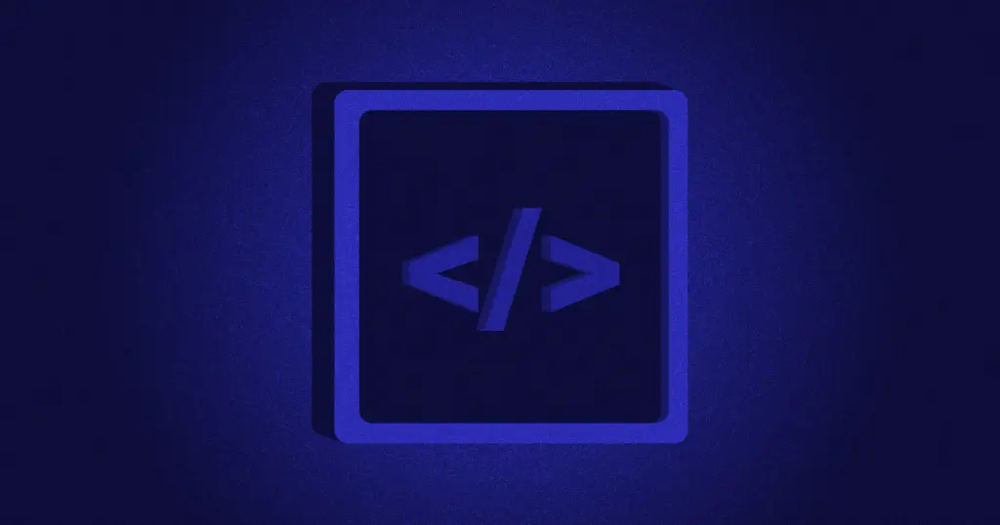
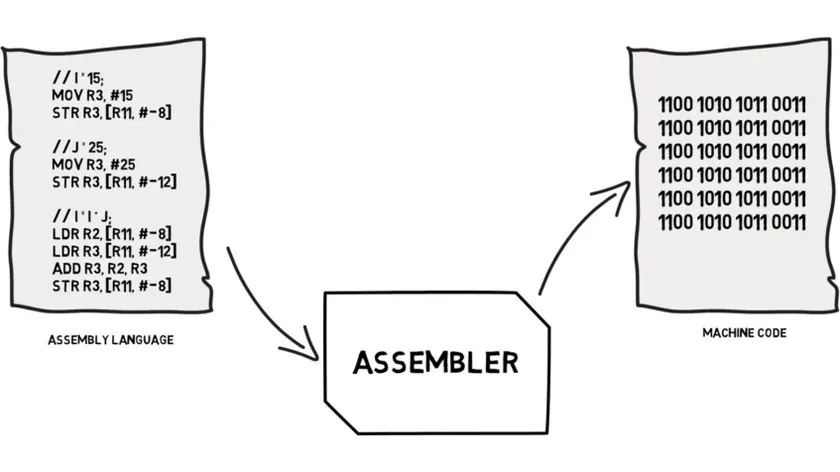
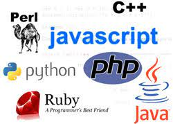

Un lenguaje de programación es un conjunto de símbolos y códigos usados para orientar la programación de estructuras en el desarrollo web
Son lenguajes totalmente orientados a la máquina
Sirve de interfaz y crea un víncul0 inseparable entre el gardaware y el sotfware
Tienen como objetivo facilitar el trabajo del programador, ya que utilizan unas instrucciones más fáciles de entender
Este tipo de lenguaje permite escribir cósigos mediante idiomas que conocemos y luego, para ser ejecutados, se traduce al lenguaje de máquina mediante traductores o compiladores
Estos traducen el código ingresado a lenguaje de máquina generando un cósugo binario ejecutable
El IDE (Integrated Development Environment) o Entorno de Desarrollo Integrado, es una aplicación informática que proporciona una serie de servicios que facilitan la programación de software, tales como: